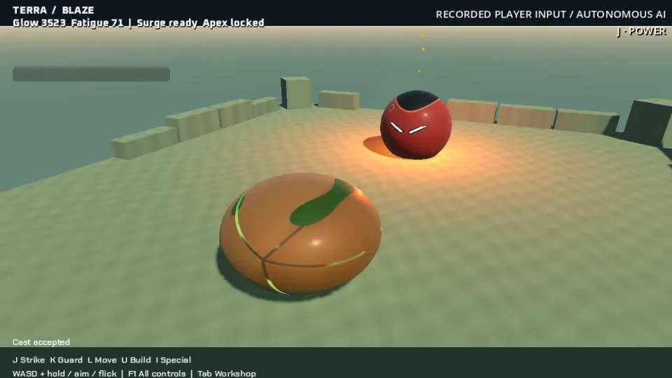
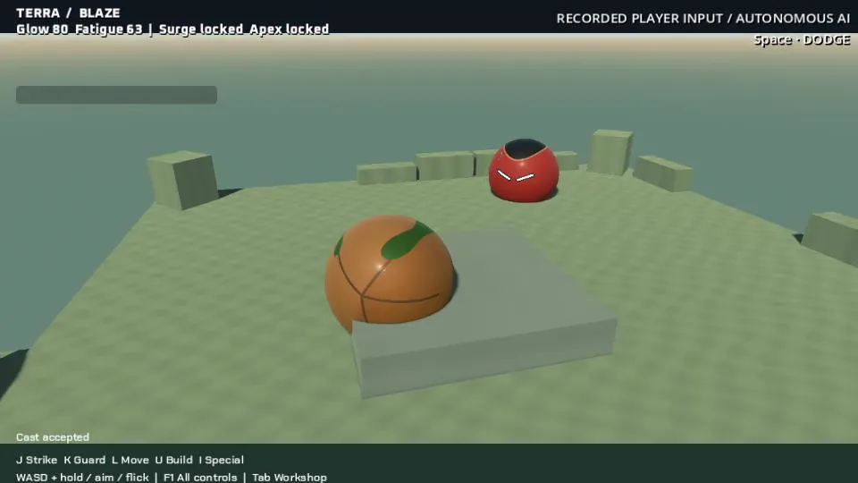

Ordinary controls in the duel
A twenty-second gameplay capture runs recorded mouse and key inputs through TERRA's ordinary controls against autonomous BLAZE. The inputs are replayed, rather than entered live by a person; this is separate from the choreographed reference fight. These are the current gameplay orbs, with the new shell study still unapplied.
The stills show anticipation and real stone and plasma interactions. At 12.10 seconds, a wall hides part of the contact. That frame deliberately shows the obstruction: it does not establish a successful counter, and the camera still needs to reveal the exchange.
Both fighters remain lit for all twenty seconds, but BLAZE's last accepted action is around 11.8 seconds. Late idle periods and rejected actions leave sustained combat unfinished. The next step is to keep legal actions flowing through the later part of the duel while making their consequences easier to see.
Anticipation, stone and an obscured contact


